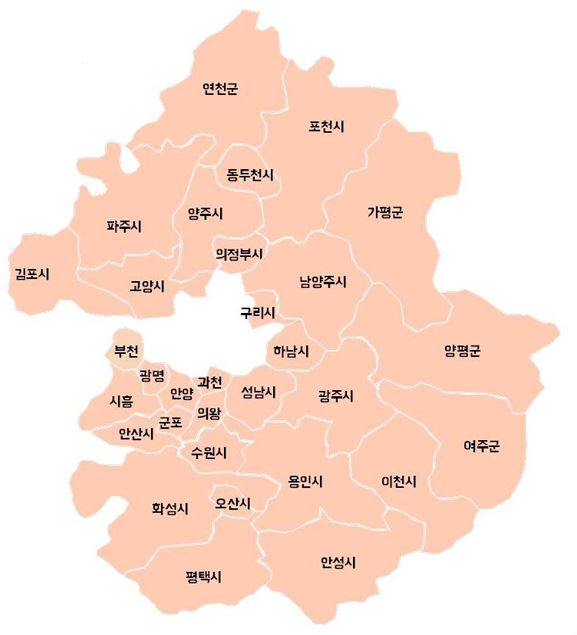

경기도
경기도의 마크
경기도 산하 31개 시/군들의 강력한 네트워크와
팀워크를 상징하는 동시에 21세기 글로벌 시대의
네트워크를 상징합니다. 무한한 성장 가능성과
기회를 찾아 세계를 향해 힘차게 뻗어 나가는
역동적인 모습을 표현하고 있으며,
또한 지역간, 계층간의 갈등을 극복하고
모두가 한마음이 되어 세계를 향해 힘차게
나아가는 경기도의 상생의 리더십을
반영하고 있습니다.
경기도의 슬로건
경기도의 슬로건인 Global Inspiration,
세계속의 경기도는 세계 각국의 창의적인 아이디어와
영감들이 끊임없이 교차하는 글로벌 시대에
경기도가 첨단 지식과 기술, 창조적인 생각과 행동으로
동북아 경제시대의 중심이 되고 '세계속의 경기도'가
된다는 의미를 함축적으로 담았습니다.
